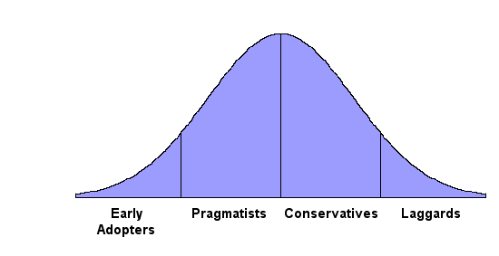
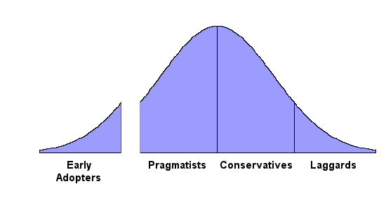

This article is part of a series entitled "Marketing for Geeks". The central theme is that if we demystify marketing, it can be competently done by technical people.
Most geeks tend to shy away from marketing, citing their lack of creativity and graphic design skills. But these are typically not the differentiators which determine whether marketing is competent or not. Marketing efforts tend to succeed or fail on their strategy and tactics, not on their artwork. Before you start designing logos or wordsmithing your ad copy, you need to do three things:
-
Pick a market segment and make sure you will be facing competition of the right kind.
(see: Choose Your Competition) -
Understand the four stages in the life of your product's market.
(this article: Act Your Age)
The first two steps were explained in previous articles. In both, you have the luxury of choices. You get to choose your market segment. You get to define your product's position.
But step three is something that happens to your product whether you like it or not. Not unlike the natural aging process we experience as human beings, our products go through various stages of life. In both cases, the only way to avoid the next stage is death, so we might as well learn to handle these stages with a measure of grace.
Four Groups
The people in your market segment are divided into four groups:
Early Adopters are risk takers who actually like to try new things.
Pragmatists might be willing to use new technology, if it's the only way to get their problem solved.
Conservatives dislike new technology and try to avoid it.
Laggards pride themselves on the fact that they are the last to try anything new.
Marketing textbooks usually draw these groups using a bell curve, something like this:

The bell curve highlights two important things:
1. The middle two groups account for most of your potential customers.
2. You can only get these customers in order, moving from left to right.
Each of the four groups has its own behavior which determines when they will buy your product:
- The Early Adopters don't need much convincing. Some of them will try
your product just because it's new. They don't wait for anybody else's
endorsement. They are leaders who prefer to be on the bleeding edge of
technology.
- The Pragmatists will only buy your product when they see other Pragmatists
doing it. If this sounds like a chicken-and-egg paradox, it is.
We'll talk more about this problem below.
- The Conservatives will buy your product only after they see that the
Pragmatists are happy with it.
- There is no way to predict the behavior of the Laggards. They may never buy your product. You can safely ignore them. If your product gets to the point where you are selling to the Laggards, you will no longer be in charge of marketing at your company. Your company has become quite successful. You are semi-retired. You have hired a marketing VP and assigned him ridiculous and unattainable goals just so you can watch him squirm.
The Chasm
To be successful, you eventually have to sell your product to the Pragmatists and Conservatives, but these two groups behave very differently from the groups on the ends of the bell curve. Specifically, the middle two groups function with a "herd mentality". They are followers. They only buy when they see somebody else doing it.
The Conservatives are actually not all that difficult. They watch the Pragmatists very closely. They'll start buying after most of the Pragmatists are happy with your product. You don't have to do any special gymnastics to attract the Conservatives. Once the Pragmatists like you, then the Conservatives will follow.
The Pragmatists are the real problem group. They are followers, but the only people they're willing to follow are each other. It's tempting to think they will simply wait for the group ahead of them to like your product, but it's not true. The endorsement of the Early Adopters is not enough. Like a junior high dance, the Pragmatists are watching each other, waiting for somebody else to make the first move.
This dynamic is very well explained by Geoffrey Moore in his outstanding book Crossing the Chasm. Moore argues that the classic marketing bell curve is wrong, and should actually be rendered more like this:

This drawing reflects the fact that there is no smooth or logical transition between the Early Adopters and the Pragmatists. In between the Early Adopters and the Pragmatists there is a chasm. To successfully sell your product to the Pragmatists, you must "cross the chasm".
But if the Pragmatists won't buy until they see each other doing it, how we get across?
The key is to find a Pragmatist who is desperate, or as Moore says, a "Pragmatist in Pain". They have a problem, and they need it solved very badly. In fact, they are so desperate for a solution that they are willing to break ranks with their Pragmatist peers and be the first of their kind to try your product.
You need to have a very special relationship with your Pragmatist in Pain. They don't like working with small ISVs. They prefer to buy from larger vendors with established reputations. By choosing to buy your product, they are sponsoring you across the chasm. You don't really deserve to be on the other side, and they know that.
So you have to treat them like they are very special. Give them everything they want, almost as if they were ordering a custom application. You may have to implement special features just for them. You may have to give them substantial discounts. You should visit their site and meet them in person. You may have to install your product for them. Financially, this one customer will probably be a net loss. That's okay. Don't stop until they're happy. And then keep them happy, as your corporate lips are going to be more or less permanently sewn to their corporate rear end.
Since crossing the chasm is so difficult, you might be tempted to think you can just stay on the left side. Maybe the Early Adopters represent a market which is big enough for your product? Sorry, but this won't work. The Early Adopters like new things, and your product is getting older every day. If you try to build your product's entire life on the Early Adopters, you take the risk that they will abandon you for somebody else who proclaims to have the latest cool thing. In the long run, it's not safe to remain on the left side of the chasm.
A Few Examples
- SourceOffSite has crossed the
chasm. Life is very good over here. Most of the Fortune
500 is on our customer list. The product is extremely
profitable.
- But SourceGear Vault is
still pre-chasm. We've shipped our 1.0 release and the Early Adopters
love it. We're now finishing up a 1.1 release which contains a number of
improvements, but this release won't get us across. Luckily, the SourceSafe
world is filled with many Pragmatists in Pain. We're talking to several
of them as we work on our 2.0 release.
- Microsoft Windows has obviously moved way beyond the chasm.
- But Microsoft CRM is definitely
still over in the land of the Early Adopters. The Redmond giant can
cross the chasm more easily than you or I, but they still have to do it.
And just like everybody else's stuff, most new Microsoft products don't cross
over until version 3.0.
- Some of my fellow .NET fans will disagree with me, but I consider .NET to
be pre-chasm. Will .NET 2.0 arrive on the other side of the chasm, one
version number earlier than usual? Maybe.
- Java is definitely post-chasm.
- DVD players are post-chasm. In fact, my parents recently got a DVD
player, so this market is evidently starting to attract the
Laggards.

- What about Weblogs? Pre or post chasm? Despite the
dramatic rise in popularity over the last couple years, I'd have to say
weblogs are still pre-chasm, with most of their potential yet to be
realized.
- Digital cameras have crossed the chasm, just in the last couple of
years or so.
- PDAs crossed the chasm, and then somehow lost their balance and fell back
into the abyss.
Act Your Age
Don't get yourself in a big hurry. The timeframe spanned by this bell curve is usually measured in years, not weeks or months. These four groups and the transitions between them represent distinct stages in the life of your product. Each of those stages is very different, and things will go much better if you behave appropriately at each stage of your product's life.
Nine year old girls don't wear heavy makeup. Sixty-five year olds don't
start bachelor's degrees. Thirty-two year olds don't stay up all night
like they did ten years before. (And yes, there are exceptions to each of
these rules. )
Similarly, products need to act their age. Choosing features is a part of marketing. When you decide what features to include in each release, you need to keep your product's current life stage in mind. Here are a few examples of what this might mean:
- To attract the Early Adopters, your product needs to be cool and
new. To attract the Conservatives it needs to be boring
and well-established.
- When pursuing the Early Adopters, don't spend time putting in features
that only the Conservatives care about.
- As described above, to keep your sponsoring Pragmatist happy, you will
have to do basically everything they want. But you probably
can't give that kind of treatment to everyone on the other side of
the chasm. There are too many Pragmatists and Conservatives to meet
their needs one at a time.
- In the Early Adopters stage, listen. Many of these folks are
technologists like you. They're smart, they're interested in your
product, they speak your language, and they have good ideas. Get in
a dialogue with them, and pay attention.
- In the Pragmatists and Conservatives stage, listen even more
carefully. These people are nothing like you. You're a geek and
you enjoy technology for its own sake. They just want their problems
solved, and they don't care in the slightest about the religious wars we fight
amongst ourselves. Don't assume you know anything about the problems
they're facing. Oh and by the way, we're the ones who are abnormal, not
them.
- Remember, Pragmatists are practical. They want no-nonsense solutions
to their problems. If you throw in a feature just because one
of your developers thinks it was cool, the Pragmatists will not be
impressed.
- If you're selling to the Conservatives, don't start making gratuitous
changes. Conservatives are like cats -- if you move too fast, you'll
scare them.
P.S.
My apologies to fans of Geoffrey Moore who
think I have oversimplified things too much. I'm a geek trying to explain
marketing to other geeks, so it seems prudent not to exceed the available
precision.
Readers who want lots more detail are strongly encouraged to get Crossing the Chasm as well as his followup book, Inside the Tornado, which is also very good.